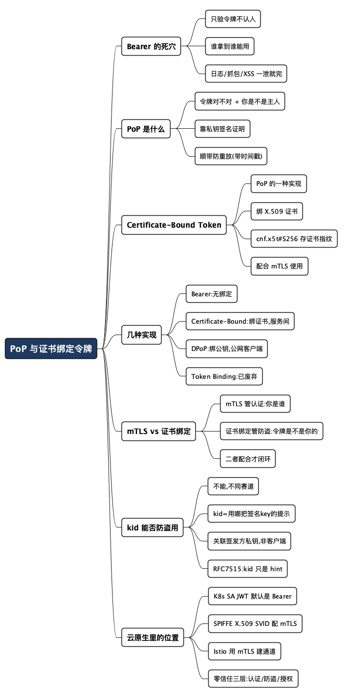

令牌被偷了也白搭：说清楚 PoP 与证书绑定令牌
Posted on 六 01 8月 2026 in Tech
| Abstract | 令牌被偷了也白搭：说清楚 PoP 与证书绑定令牌 |
|---|---|
| Authors | Walter Fan |
| Category | learning note |
| Status | v1.0 |
| Updated | 2026-08-01 |
| License | CC-BY-NC-ND 4.0 |
先讲个让人后背发凉的小事。
某次排查线上问题，我在一份抓包日志里看到一整串 Authorization: Bearer eyJhbGci...。当时脑子里冒出的第一个念头不是“哦，这是访问令牌”，而是——如果这份日志被谁复制走了，他现在就能拿着这串字符，冒充这个用户去调 API，而且服务端根本分不出来。
这不是我一个人的担忧。OAuth 里最常见的 Bearer Token（持有者令牌）有一句很扎心的定义：
Bearer = Whoever Bears It Wins。谁拿到，谁就赢。
令牌本身不认人。它就像一张不记名的电影票，谁攥在手里谁就能进场。这篇文章想聊清楚的，就是业界怎么给这张“不记名票”加上一道“认人”的锁——两个关键词：PoP（Proof of Possession，持有证明） 和 Certificate-Bound Token（证书绑定令牌）。
一句话先把结论立住：
- PoP 回答的是“你能不能证明你是令牌的主人”。
- Certificate-Bound Token 是 PoP 的一种具体实现，答案是“这张令牌只认那把证书私钥”。
提示：文中的 JWT、mTLS、cnf、DPoP 这些词，第一次出现我都会用一句大白话解释。不写后端的读者也能顺下来，代码块可以跳过。
1. 先看清楚 Bearer Token 的死穴
咱们把普通 OAuth 的流程摊开看。授权服务器发给客户端一个访问令牌，客户端调 API 时把它塞进请求头：
Authorization: Bearer eyJhbGci...
服务端的验证逻辑简单得可怕，基本就一句话：这令牌是真的、没过期？是的话，放行。
问题就出在这里——它只验令牌本身，从不问“拿令牌的人是不是当初那个人”。于是攻击者的活儿变得毫无难度：
sequenceDiagram
participant C as 客户端
participant A as 攻击者
participant API as 资源服务器
C-->>A: 令牌泄露（日志/抓包/XSS）
A->>API: Authorization: Bearer xxxxx
API-->>A: 令牌有效 → 放行 ✅
攻击者不需要知道密码，不需要碰你的账号，甚至不需要理解令牌里写了什么。他只要复制那串字符，就赢了。
这就是 RFC 6750 定义的 Bearer Token 的本质。它简单、通用、到处都在用，但它的安全模型建立在一个脆弱的假设上：这串字符从签发到使用，中间不会被任何人看到。 现实里,日志、代理、浏览器插件、缓存,任何一个环节都可能把这个假设击穿。
Bearer Token 像不记名的现金：方便，但丢了就是别人的。
2. PoP：光有令牌不够，还得证明你是主人
PoP 的思路特别朴素。服务端不再只问一个问题，而是问两个：
- 令牌对不对？
- 你能不能证明你就是这令牌的主人？
两个都过才放行,缺一不可。怎么“证明”?靠一把只有主人自己有的私钥。
它把不记名的现金,换成了记名的银行卡:卡（令牌）你可以给别人看,但没有密码（私钥）,别人刷不了。
flowchart TD
Start[收到请求] --> T{令牌有效?}
T -- 否 --> Reject[拒绝]
T -- 是 --> P{能证明持有对应私钥?}
P -- 否 --> Reject
P -- 是 --> OK[放行 ✅]
关键在于第二道关。即使攻击者偷到了令牌那串字符,他手里没有私钥,签不出正确的签名。服务端一看签名对不上,直接 403。令牌到了他手里,也只是一串废字符。
PoP 的基本流程
拆开看,一次 PoP 大致是这样跑的。客户端手里有一对钥匙:私钥自己藏好,公钥可以公开。
申请令牌时,授权服务器把客户端的公钥指纹记在令牌里,放在一个叫 cnf（confirmation,确认声明)的字段里:
{
"sub": "alice",
"cnf": { "...": "客户端公钥（或其指纹）" }
}
以后每次调 API,客户端不光带上令牌,还要用私钥对“这次请求的关键信息”签个名——比如 HTTP 方法、URI、时间戳:
GET /orders
Authorization: PoP <token>
Signature: Sign(Method + URI + Timestamp)
资源服务器收到后,从令牌里取出公钥,用公钥去验这个签名。对得上,说明请求确实是私钥持有者本人发的;对不上,拒绝。
sequenceDiagram
participant C as 客户端(有私钥)
participant AS as 授权服务器
participant RS as 资源服务器
C->>AS: 申请令牌(附带公钥)
AS-->>C: 令牌(cnf=公钥)
C->>RS: 令牌 + 用私钥签的请求签名
RS->>RS: 从令牌取公钥, 验签名
RS-->>C: 签名对 → 放行 ✅
签名里带上时间戳还顺手解决了另一个问题:重放攻击。攻击者就算录下了你某一次完整的请求,过一会儿再发出去,时间戳也已经过期了。
3. Certificate-Bound Token:把令牌钉死在一张证书上
PoP 是个思路,落地时“用什么当私钥”有好几种选择——可以是软件里的一对公私钥,也可以是 TPM、Secure Enclave、HSM、FIDO Key 这类硬件里的密钥。
Certificate-Bound Token(证书绑定令牌)是 PoP 的一种具体实现,它绑定的是 X.509 证书。 X.509 就是我们平时说 HTTPS 证书时的那个证书标准,浏览器地址栏那把小锁背后就是它。
这套玩法通常和 mTLS(双向 TLS) 配合。普通 HTTPS 里,只有服务器要出示证书证明“我是这个网站”;mTLS 则要求客户端也出示自己的证书,双方互相验明正身。客户端手里握着自己的 client.crt(证书)和 client.key(私钥)。
绑定的过程是这样的:授权服务器在发令牌时,把客户端证书的 SHA-256 指纹写进令牌:
{
"iss": "https://issuer",
"sub": "alice",
"exp": 123456789,
"cnf": {
"x5t#S256": "6F4A...证书的 SHA-256 指纹"
}
}
这里的 cnf 还是那个确认声明(RFC 7800 定义),里面的 x5t#S256 专指“证书的 SHA-256 指纹”。相当于在令牌里刻了一句话:这张票只认指纹为 6F4A... 的那张证书。
以后客户端调 API 时,资源服务器分三步核对:
flowchart TD
A[从 mTLS 拿到客户端证书] --> B[计算证书指纹]
B --> C[读取令牌里的 cnf.x5t#S256]
C --> D{两个指纹一致?}
D -- 一致 --> OK[放行 ✅]
D -- 不一致 --> Reject[拒绝 ❌]
妙就妙在:攻击者偷到令牌那串字符没用。因为他手里没有 client.key,连 mTLS 握手都完不成——TLS 通道根本建立不起来,请求发都发不出去,更别说验指纹了。
为什么叫“绑定”
因为令牌和证书之间被拴成了一对:
flowchart LR
Token[访问令牌] -->|只能配合| CertA[证书 A]
Token -.->|换成| CertB[证书 B] -.-> X[失效]
Token -.->|没有证书| None[失效]
换一张证书、或者干脆没证书,令牌立刻作废。所以叫它“证书绑定令牌”。
令牌里还能绑公钥
cnf 不止能装证书指纹。如果你走的是纯公钥绑定的路线,里面装的就是一个 JWK(JSON Web Key,公钥的 JSON 表示):
"cnf": {
"jwk": { "...公钥内容..." }
}
装证书指纹,是证书绑定;装公钥,是下面要说的 DPoP 那一路。骨架都是 cnf,区别只在“往里塞什么”。
4. PoP 的几种主流实现,一张表看懂
把前面的东西收进一张表,一眼就能定位:
| 类型 | 绑定对象 | 需要 mTLS 吗 | 典型场景 |
|---|---|---|---|
| Bearer Token | 无 | 否 | 最常见,但谁拿到谁能用 |
| Certificate-Bound Token | X.509 证书 | 通常需要 | 企业内网、金融、服务间通信、零信任 |
| DPoP | JWK 公钥 | 否 | 浏览器、移动端、SPA 等公网客户端 |
| Token Binding(已废弃) | TLS Channel | 是 | 基本没人用了 |
它们其实是一层套一层的关系,画出来是这样:
flowchart TD
B[Bearer Token] --> B1[谁拿到都能用<br/>最常见]
B --> P[PoP Token]
P --> C[Certificate-Bound<br/>绑证书]
P --> D[DPoP<br/>绑公钥]
P --> TB[Token Binding<br/>已淘汰]
目前 OAuth 社区最推荐的是两条路:
- mTLS + Certificate-Bound Token——安全性高,适合服务与服务之间的通信(双方都有证书,天然适配)。
- DPoP——不需要 mTLS,更适合公网客户端(浏览器、App 里没法优雅地管理客户端证书,用一对临时公私钥更现实)。
选哪条,基本就看你的客户端是“机房里的服务”还是“用户手机/浏览器”。
5. 别把 mTLS 和证书绑定令牌搞混
这两个词长得像,很多人会当成一回事,其实它们各管一摊:
- mTLS 负责认证:证明客户端是谁(TLS 握手时验证书)。
- Certificate-Bound Token 负责绑定:证明这张令牌就是发给这张证书的(验
cnf指纹)。
只有 mTLS,你知道对面是谁,但不知道他手里的令牌是不是“借来的”;只有证书绑定而没有真正的 mTLS 通道,那指纹也无从核对。两个配合起来,才形成完整闭环:
sequenceDiagram
participant C as 客户端
participant API as 资源服务器
C->>API: mTLS 握手(出示客户端证书)
API->>API: ① mTLS 确认客户端身份
API->>API: ② 计算证书指纹
API->>API: ③ 读令牌 cnf,比对指纹是否一致
API-->>C: 三步都过 → 放行 ✅
结论很干脆:就算攻击者同时偷到了令牌、又能连上 API,只要他没有那把私钥,令牌照样用不了。 安全性从“保护一串字符不泄露”,升级成了“保护一把私钥不泄露”——而私钥,是可以放进硬件、永不导出的。
6. 那 JWT header 里的 kid 能不能顶上?
这是我被问过好几次的问题,也是个特别值得澄清的误会:“既然 JWT 头里有个 kid,能标识 key,那它是不是也能防盗用?”
答案很干脆:不能,它俩根本不在一个赛道上。
先看 kid 到底是干嘛的。JWT 是用 JWS(JSON Web Signature)签名的,它的头部长这样:
{
"alg": "RS256",
"kid": "2026-key-01"
}
按 RFC 7515 的原话,kid(Key ID)只是一个 hint(提示),告诉验签方“我这个令牌是用哪把 key 签的,你去对应的 key 里挑那把来验”。它解决的是签发方的一个纯工程问题:密钥轮换。
打个比方:授权服务器同时挂着好几把签名私钥(旧的还没退役、新的已经上线),它把公钥集合发布在一个 JWKS(JSON Web Key Set)地址上,每把公钥带一个 kid。验签方拿到令牌,读一眼 kid,就知道该用 JWKS 里的哪把公钥来验。仅此而已。
看出关键区别了吗?
kid |
cnf(PoP / 证书绑定) |
|
|---|---|---|
| 回答的问题 | 该用哪把签名 key验签? | 令牌是不是你这个客户端的? |
| 关联的私钥 | 签发方(授权服务器)的 | 客户端自己的 |
| 客户端要不要出示什么 | 不用 | 必须用私钥签名 / 出示证书 |
| 攻击者偷到令牌后 | 照样能用 ❌ | 用不了 ✅ |
一句话戳破:
kid说的是“这令牌是谁签的”,cnf说的是“这令牌是发给谁的”。前者关心签发方的钥匙,后者关心持有者的钥匙。
再往细里说,kid 关联的是授权服务器的签名私钥——那把私钥根本不在客户端手里,客户端从头到尾不需要用它证明任何东西。所以攻击者偷到一个带 kid 的普通 Bearer JWT,kid 帮他顺利通过验签(因为令牌确实是真的),他照样能冒充你。kid 不但没拦住盗用,反而是在"帮"验签方确认这令牌是真货。
顺便说一句,RFC 7515 头部里还有几个长得像的字段容易一起混:jwk 是直接把签名用的公钥塞进头里、x5t#S256 是签名证书的 SHA-256 指纹。注意这个 x5t#S256 和第 3 节讲的客户端证书绑定里的 x5t#S256 位置不同、含义不同——头部里的说的是"签名用的证书",cnf 里的说的才是"绑定的客户端证书"。同一个词,放错地方意思就变了。
所以别指望 kid 防盗用。它是密钥轮换的好帮手,但持有证明这活儿,还得靠 cnf + 私钥。
7. 跟 Kubernetes、SPIFFE、微服务是什么关系
如果你在搞云原生,这套东西不是屠龙之技,而是每天打交道的现实。对照几个常见组件:
- Kubernetes ServiceAccount JWT:默认就是 Bearer Token。Pod 里挂载的那个令牌,拿到就能用(在有效期内)。方便,但一旦被带出容器,风险和前面说的一模一样。
- SPIFFE / SPIRE:给工作负载(workload,可以理解成“一个跑着的服务实例”)发身份。它的两种形态里,X.509 SVID(短生命周期证书)天生就适合和 mTLS 配对;另一种是 JWT-SVID。
- 服务网格(如 Istio):通常用 mTLS 在服务之间建立加密通道,再叠加身份策略做细粒度授权。
- 如果授权服务器签发的是 Certificate-Bound Token,那么即使访问令牌泄露,攻击者没有那个工作负载持有的私钥,也没法冒充它去调下游 API。
把它们串起来,就是现代零信任架构里越来越常见的一套组合拳:
flowchart TD
ID[SPIFFE X.509 身份] --> TLS[mTLS 通道]
TLS --> AS[授权服务器<br/>签发 Certificate-Bound Token]
AS --> RS[资源服务器]
RS --> V1[✓ 令牌有效]
RS --> V2[✓ mTLS 证书匹配 cnf]
RS --> V3[✓ 授权策略允许]
这套设计一口气回答了三个不同层面的问题,别把它们混为一谈:
- 身份认证(Who are you?)——你是谁,靠 mTLS 证书。
- 令牌防盗用(Can you prove you own it?)——这令牌是不是你的,靠 PoP / 证书绑定。
- 授权控制(What are you allowed to do?)——你能干什么,靠授权策略。
金融、云原生、零信任系统里,这三层正越来越多地被当成“标配”而不是“加分项”。
选型时先画四个边界
实际选型前，先写清四件事：客户端能否安全保存私钥，Token 会不会经过多个代理，证书由谁签发和轮换，泄露后希望多快失效。浏览器、移动端、服务间调用的答案通常不同，不要因为某个方案在服务间很顺手，就把它原样搬到浏览器。
一个很有用的交付物是“失败路径表”：证书过期、私钥丢失、Token 被复制、网关没有转发绑定信息、下游只会验签不会验绑定时，系统分别返回什么、如何告警、如何恢复。PoP 的价值不只在于多了一次验签，而在于让凭证的使用边界能够被系统明确表达出来。
最后一句
回到开头那份让我后背发凉的抓包日志。如果那串令牌是证书绑定的,我大概就能松口气了——因为光有那串字符没用,得有对应的私钥才行,而私钥不在日志里。
Bearer Token 教会我们方便,PoP 和证书绑定教会我们:方便和安全之间,差的往往就是一把“别人偷不走”的钥匙。
行动清单
想在自己的系统里往前挪一步,可以按这个顺序:
- 先盘点:你的哪些令牌是纯 Bearer?尤其注意会进日志、进浏览器、进第三方代理的那些。
- 分场景选路线:服务间通信优先 mTLS + Certificate-Bound Token;公网客户端(浏览器/App)优先 DPoP。
- 令牌有效期尽量短:PoP 提高了盗用门槛,但短有效期是永远不亏的兜底。
- 私钥托付给硬件:能进 TPM / Secure Enclave / HSM 的私钥,就别留在配置文件里。
- 服务端务必校验
cnf:签发了绑定令牌却不核对指纹,等于装了锁不上锁。 - 别自己造密码学:签名、指纹、TLS 这些,用成熟库和标准(RFC 6750 / 7800 / 8705 / 9449),别手搓。
一句话收尾:
Bearer 是“不记名的票”,PoP 是“记名的票”。当你的系统开始值钱,就该把票记上名了。
参考资料
想深挖的,直接读一手 RFC,别只看二手博客(包括本文):
令牌与持有证明
- RFC 6750 - The OAuth 2.0 Authorization Framework: Bearer Token Usage —— Bearer Token 的定义与用法,“谁拿到谁能用”的出处。
- RFC 7800 - Proof-of-Possession Key Semantics for JWTs —— 定义了
cnf(confirmation)确认声明,PoP 的地基。x5t#S256、jwk都在这里。 - RFC 8705 - OAuth 2.0 Mutual-TLS Client Authentication and Certificate-Bound Access Tokens —— mTLS 客户端认证 + 证书绑定令牌的完整规范,第 3 节讲证书绑定。
- RFC 9449 - OAuth 2.0 Demonstrating Proof of Possession (DPoP) —— DPoP 规范,面向公网客户端的、不依赖 mTLS 的 PoP 方案。
JWT / JWS / JWK(理解 kid 必读)
- RFC 7515 - JSON Web Signature (JWS) —— 定义
kid、jwk、x5t、x5t#S256等头部参数。其中 §4.1.4 明确写道kid只是“a hint indicating which key was used”(用哪把 key 的提示),这是本文第 6 节结论的原始依据。 - RFC 7517 - JSON Web Key (JWK) —— 定义 JWK 与 JWK Set(即 JWKS),
kid用来在 JWKS 里匹配对应的 key。 - RFC 7519 - JSON Web Token (JWT) —— JWT 本体规范(
iss、sub、exp等声明)。 - RFC 7638 - JSON Web Key (JWK) Thumbprint —— JWK 指纹的算法,DPoP 里用它给公钥算指纹。
工作负载身份(云原生场景)
- SPIFFE 规范总览 —— SPIFFE ID、SVID 的定义。
- X.509 SVID 规范 / JWT SVID 规范 —— 两种 SVID 形态,前者天然配 mTLS。
全文思维导图
@startmindmap
<style>
mindmapDiagram {
node {
BackgroundColor #F8F9FA
RoundCorner 10
Padding 10
FontSize 13
}
:depth(0) {
BackgroundColor #1E3A5F
FontColor white
FontSize 18
FontStyle bold
}
:depth(1) {
FontSize 15
FontStyle bold
}
:depth(2) {
FontSize 13
}
}
</style>
* PoP 与证书绑定令牌
** Bearer 的死穴
*** 只验令牌不认人
*** 谁拿到谁能用
*** 日志/抓包/XSS 一泄就完
** PoP 是什么
*** 令牌对不对 + 你是不是主人
*** 靠私钥签名证明
*** 顺带防重放(带时间戳)
** Certificate-Bound Token
*** PoP 的一种实现
*** 绑 X.509 证书
*** cnf.x5t#S256 存证书指纹
*** 配合 mTLS 使用
** 几种实现
*** Bearer:无绑定
*** Certificate-Bound:绑证书,服务间
*** DPoP:绑公钥,公网客户端
*** Token Binding:已废弃
** mTLS vs 证书绑定
*** mTLS 管认证:你是谁
*** 证书绑定管防盗:令牌是不是你的
*** 二者配合才闭环
** kid 能否防盗用
*** 不能,不同赛道
*** kid=用哪把签名key的提示
*** 关联签发方私钥,非客户端
*** RFC7515:kid 只是 hint
** 云原生里的位置
*** K8s SA JWT 默认是 Bearer
*** SPIFFE X.509 SVID 配 mTLS
*** Istio 用 mTLS 建通道
*** 零信任三层:认证/防盗/授权
@endmindmap

本作品采用知识共享署名-非商业性使用-禁止演绎 4.0 国际许可协议进行许可。 欢迎在我的个人网站 https://www.fanyamin.com 访问原文并评论。